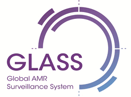

В октябре 2015 г. Всемирная организация здравоохранения (ВОЗ) вместе с сотрудничающими центрами ВОЗ и существующими сетями по надзору за устойчивостью к противомикробным препаратам запустила Глобальную систему по надзору за устойчивостью к противомикробным препаратам (GLASS) на основе опыта других программ эпиднадзора ВОЗ.
В октябре 2015 г. Всемирная организация здравоохранения (ВОЗ) вместе с сотрудничающими центрами ВОЗ и существующими сетями по надзору за устойчивостью к противомикробным препаратам запустила Глобальную систему по надзору за устойчивостью к противомикробным препаратам (GLASS) на основе опыта других программ эпиднадзора ВОЗ.

Создаваемая глобальная система эпиднадзора за устойчивостью к противомикробным препаратам (GLASS) будет поддерживать стандартизированный подход к сбору, анализу и обмену данными об устойчивости к противомикробным препаратам на глобальном уровне.
Для достижения этой цели в глобальном плане действий предусмотрено пять стратегических задач:
- улучшить понимание вопросов устойчивости к противомикробным препаратам;
- накапливать знания за счет исследований и эпиднадзора;
- снизить заболеваемость;
- оптимизировать использование противомикробных препаратов;
- подготовить экономическое обоснование планомерных инвестиций с учётом потребностей всех стран и увеличить инвестиции в разработку новых лекарственных средств, диагностических инструментов и вакцин и в реализацию других мер.
Цель GLASS — свести воедино клинические, лабораторные и эпидемиологические данные о патогенах, представляющих наибольшую угрозу для здоровья всего человечества. В руководстве GLASS подробно излагается предлагаемый подход к развёртыванию системы эпиднадзора на раннем этапе с акцентом на устойчивые к антибиотикам бактерии и намечено гибкое и поступательное развитие системы, учитывающее уроки, полученные на раннем этапе реализации.
Со временем GLASS будет получать информацию из других систем эпиднадзора, имеющих отношение к устойчивости человека к противомикробным препаратам, например, из систем по контролю безопасности пищевой цепи, контролю за использованием противомикробных препаратов, целевых проектов эпиднадзора и прочих источников релевантных данных. Цель внедрения системы — развивать и поддерживать многосекторальный подход в рамках концепции «единое здравоохранение» для решения проблем, связанных с устойчивостью к противомикробным препаратам у людей, животных, применительно к продуктам питания и окружающей среде.